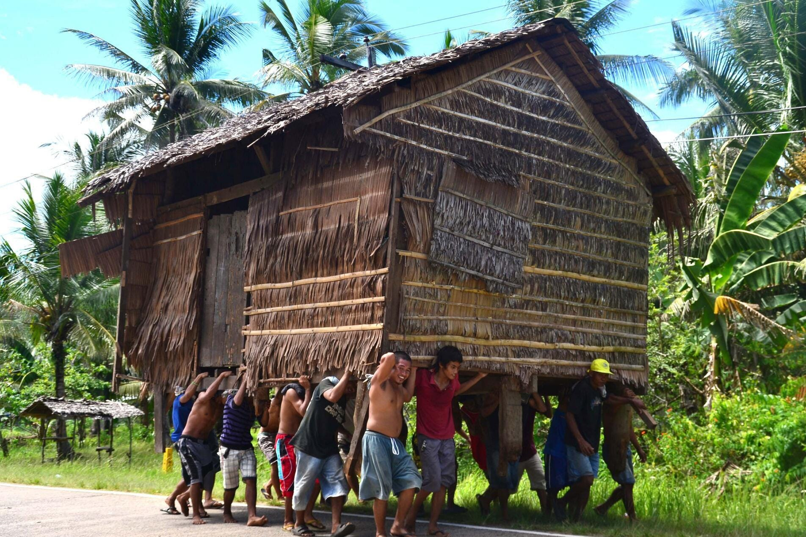
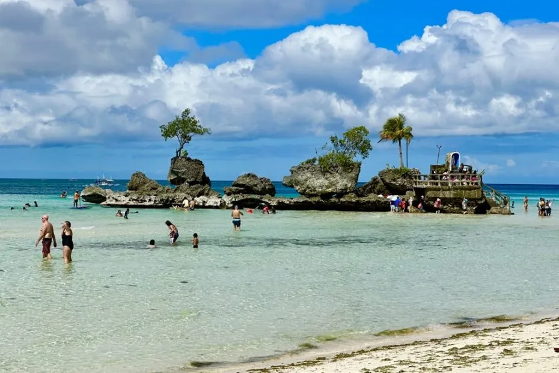
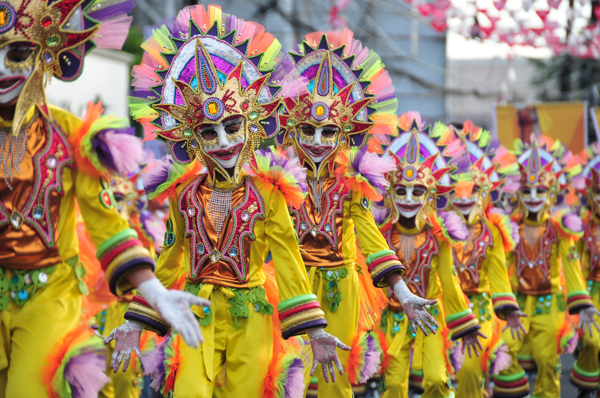
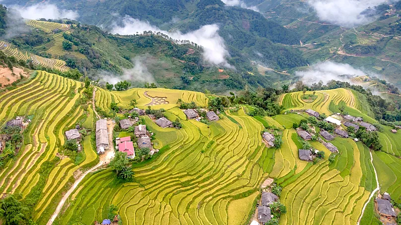

Bayanihan
Bayanihan is a traditional Filipino spirit of communal unity, derived from "bayan" (nation/community), historically characterized by neighbors volunteering to lift and move a family’s bahay kubo (nipa hut) to a new location.

Boracay
Known for its white sand beaches and vibrant nightlife, Boracay is a tropical paradise offering crystal-clear waters and stunning sunsets.

MassKara Festival
The MassKara Festival, held annually in October in Bacolod City, Philippines, originated in 1980 as a symbol of resilience during a period of severe economic crisis and tragic loss of life.

Banaue Rice Terraces
The Banaue Rice Terraces are 2,000-year-old, hand-carved mountain steps in Ifugao, Philippines, built by ancestors of the Igorot people. Known as the "Eighth Wonder of the World.

Sisig
Sisig, a world-renowned Kapampangan dish, originated in Angeles City, Pampanga, evolving from a 17th-century sour fruit salad into a savory pork dish in the 1970s. Lucia "Aling Lucing" Cunanan revolutionized it by using discarded pig heads from Clark Air Base, creating the iconic sizzling plate staple that defines Philippine culinary ingenuity.

Taal Volcano
Taal Volcano is one of the most active volcanoes in the Philippines and features a picturesque crater lake within a lake, surrounded by beautiful landscapes.